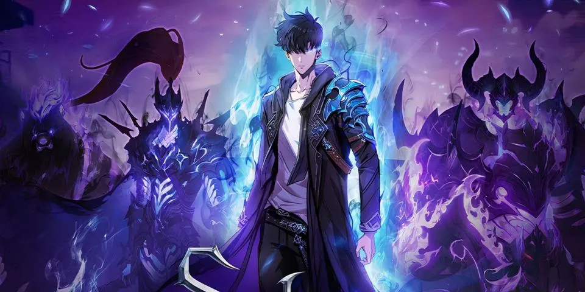

Solo Leveling: Análisis del Anime
Diferencias con el webtoon
- Escenas de combate extendidas
- Nuevos diálogos para desarrollo de personajes
- Diseño mejorado de sombras
Personajes clave
Sung Jin-Woo
De E-rank a Cazador Nacional
Igris
General de las sombras